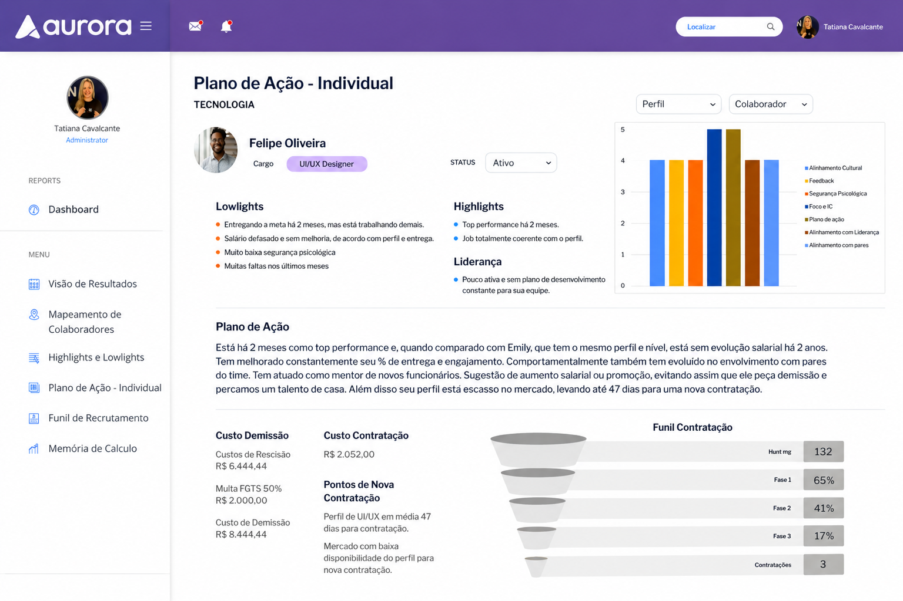
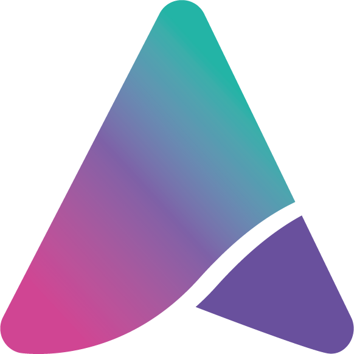

Dados espalhados, decisão travada
Planilhas soltas, pesquisas desconectadas, horas perdidas tentando consolidar informação. A Aurora reúne tudo num só lugar, em tempo real.
A Aurora cruza dados de performance, cultura e engajamento para gerar os insights que sua liderança precisa, com clareza, agilidade e impacto real no negócio.

Empresas que já confiam na Aurora
Quando os dados de pessoas estão espalhados, as decisões ficam lentas e o impacto vai direto pro resultado financeiro.
Planilhas soltas, pesquisas desconectadas, horas perdidas tentando consolidar informação. A Aurora reúne tudo num só lugar, em tempo real.
Transformar feedbacks em ações práticas é um desafio para sua empresa? A Aurora direciona o desenvolvimento de cada colaborador com recomendações personalizadas.
Promoção, aumento, sucessão: sem métricas claras, essas decisões viram aposta. A Aurora traz os dados que faltam para embasar cada movimentação.
Sua empresa perde talentos essenciais sem aviso? A Aurora identifica riscos de saída com análises comportamentais preventivas baseadas em inteligência artificial.
Seus gestores sabem quem precisa de suporte e quem está pronto pra crescer? A Aurora entrega insights prontos para a ação, direto no painel de cada líder.
Um desligamento pode custar de 50% a 200% do salário anual. A Aurora mostra esse impacto antes que ele aconteça, para que a decisão venha a tempo.
Com dados integrados e insights claros, a gestão de pessoas deixa de ser reativa e passa a gerar resultado:
Não é teoria. Quem já usa, confirma:
Quem já começou a usar conta como foi:

Diretora de RH & Sócia
"Em menos de um mês com a Aurora, a gestão do nosso time mudou de patamar. Conseguimos reunir os dados de performance num só lugar e dar pra cada líder um plano de ação claro, com metas reais. Pela primeira vez, nossas decisões sobre pessoas estão embasadas em dados e os planos de desenvolvimento finalmente funcionam no dia a dia."
Se pelo menos uma dessas situações faz parte da rotina, a Aurora foi pensada exatamente pra isso:
O turnover aumenta e o impacto financeiro dos desligamentos pega todo mundo de surpresa
Consolidar dados de performance pra apresentar à diretoria ainda é um trabalho manual e demorado
As lideranças vivem apagando incêndios e nunca sobra tempo pro desenvolvimento do time
O RH quer atuar de forma estratégica, mas fica preso em demandas operacionais
No fim do trimestre, ninguém consegue mostrar o ROI real da gestão de pessoas
Se marcou pelo menos uma, sua empresa está pronta pro próximo passo. A Aurora traz o controle, a clareza e a previsibilidade que a gestão de pessoas precisa.
Quero Ver na Prática
Simulação interativaCada saída custa recrutamento, treinamento e meses de produtividade perdida. Ajuste os números abaixo para ver esse custo na sua empresa e quanto a Aurora devolve reduzindo o turnover.
Preencha com números aproximados da sua empresa.
Estimativa baseada em referências de mercado (~7 salários por saída) e na redução média de turnover em clientes Aurora (25% em 6 meses).
27 colaboradores saem por ano, a um custo médio de R$ 42.000 cada.
Passe o mouse sobre as barras para ver o detalhamento.
O custo de reposição aparece dividido em recrutamento, onboarding e produtividade perdida, não como um número único.
A redução de 25% no turnover vem de dados de clientes Aurora, não de uma média genérica de mercado.
Colaborador retido a tempo nunca chega a virar estatística de desligamento.
Os números falam por quem já usa. Veja o impacto que a Aurora entrega nos indicadores que mais importam para a gestão de pessoas.
menos turnover, em média, nos primeiros 6 meses.
por mês devolvidas ao time de RH.
de aumento no engajamento dos colaboradores.
mais retenção em empresas que usam People Analytics (Deloitte, 2024).
A plataforma reúne o mapeamento inicial e diagnósticos de competência de cada liderança num painel único.
Líderes aplicam planos de ação focados no dia a dia da equipe, com recomendações personalizadas para cada colaborador.
Feedback contínuo e suporte de especialistas garantem que as ações gerem evolução real e foco constante.
Decisões baseadas em dados que resultam em alta performance, redução de turnover e maior retorno sobre talentos.
Em 30 minutos, mostramos como a plataforma conecta dados de performance, cultura e engajamento para gerar insights prontos para a ação.
Sim, seguimos uma política interna rigorosa de segurança de dados, adequação total à LGPD e criptografia avançada para garantir a confidencialidade das respostas.
O processo de implantação é rápido e personalizado. Depois de uma conversa inicial com a sua equipe, definimos juntos o cronograma. A maioria dos clientes começa a usar em poucas semanas.
Sim. Antes de começar, mapeamos junto com a sua equipe quais sistemas de RH já estão em uso e garantimos que a Aurora se conecte a eles sem complicação.
O investimento depende do tamanho da equipe e das funcionalidades que fazem sentido para a sua empresa. Na demonstração, já apresentamos as opções de forma transparente.
Não. A Aurora foi desenhada com uma interface intuitiva para ser usada por profissionais de RH e líderes de negócios, sem necessidade de conhecimento técnico em tecnologia.